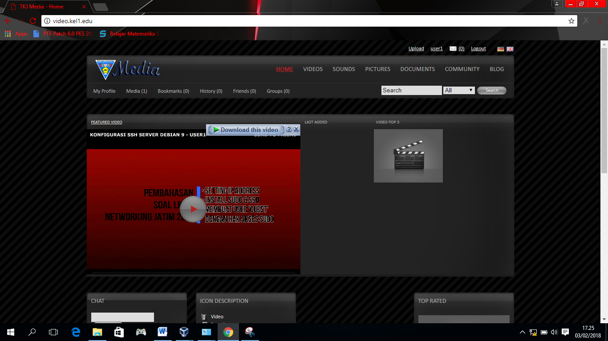
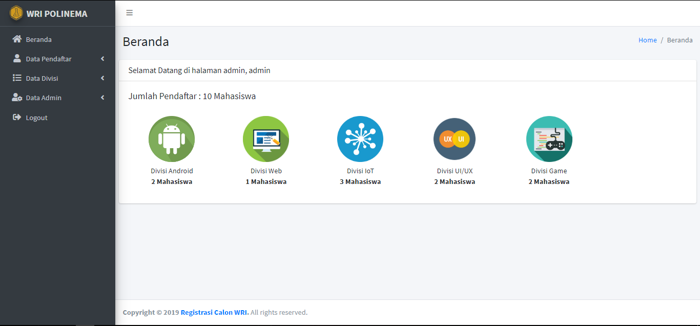

timeline Portfolio

Web aplikasi media server menggunakan cms ostube menggunakan Debian 6 sebagai server.

Website sistem pendaftaran calon anggota wri. Menggunakan Admin LTE, PHP, dan MySQL

MIKHMON web aplikasi untuk monitoring, serta generate user hotspot pada jaringan RT RW Net